GoLink

一个简单实用的短链接项目。项目地址
短链接简介
是什么
短链接通俗来讲是将一个比较长的 URL 通过程序计算的方式转换成简单的简短的网址链接。
我平时收到最多的短链接就是京东发的，下面是一个例子
【京东】北京国补狂欢限时猛料，26年国补正式上线！上京东领补贴立省15％，限时抢，手慢无！抢 3.cn/v/1-FT59nd 拒收请回复R
我们点击之后得到的 URL 是：
https://pro.m.jd.com/mall/active/4YSZ3d72rtEfxiWiDVcWRBEjCbSd/index.html?babelChannel=ttt58
正是通过短链接的方式将原本长长的地址换成了一个简短的，并且让人读不懂的链接。
很多公司也有提供短链接服务：
百度：dwz.cn
微博：t.cn
。。。
为什么
一般公司内部会有很多需要发送链接的场景，并且业务侧的非常细致，导致链接非常长，在发送短信，IM 工具发送消息以及 push 等场景会会有很多劣势，比如：
短信内容可能超长，截断会花更多的钱，信息也不完整
社交平台的字数限制
还有的平台监管机制比较严格，能识别关键字，判定为违规，比如小某书、某红书和小红某
URL 是可以转换成二维码的，如果太长，转换成的二维码就会非常复杂，短链接转换成的二维码更加清晰
这个时候将长链接转换成短链接就显得非常重要。
怎么做
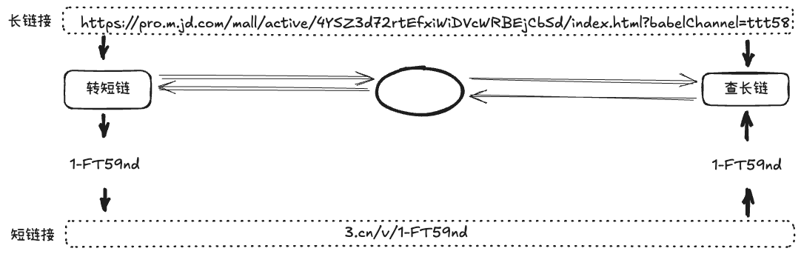
浏览器并不能将短链接转换成长链接，这里涉及到一个重新定向的概念。
浏览器收到短链接的地址，向公司的短链接服务器发送请求，公司返回数据和 302 重定向的状态码，之后浏览器进行重定向，向真正的业务服务器发送请求。
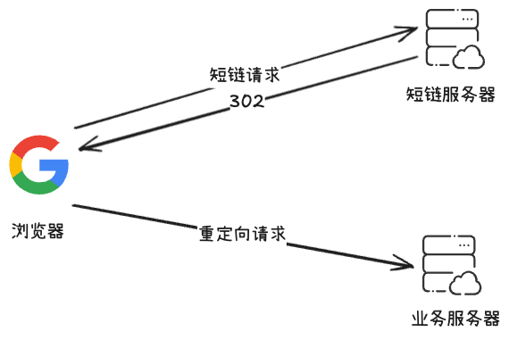
项目设计
需求分析
背景
公司内部业务需要大量发送营销短信、通知类的短信，在客服电话推销之后要发送到短信配套营销。
需要一个短链接服务满足各个业务线的使用，现阶段是提供转链接的接口，后续可以提供点击链接统计的数据报表分析接口
描述
输入一个长网址得到一个唯一的短网址
用户点击短链接能够跳转到对应的网址
为了保证业务的延续性，短网址长期有效
定位
只是公司内部业务使用的短链接服务，只接收公司内部的长链接转短链接需求，不提供对外的服务
基本在国内使用
后续可能会根据需求提供短链接的访问数据报表接口
规模
服务于公司内部多少条业务线
用户的规模是什么量级
QPS 是多少
- 注：QPS是指每秒查询率（Queries Per Second），是衡量系统性能的一个重要指标，表示系统每秒能够处理的查询请求数量。在数据库、网络、服务器等领域中，QPS是一个常用的性能指标，通常越高表示系统性能越好。
技术指标
请求延时，多少 ms之内要完成整个过程
可靠性，保证 99.99% 能正常跳转
安全性，不能数据泄露，被攻击
功能模块分析
根据需求分析，可以将需求拆分成转链模块、存储模块和访问链接模块，以及可以拓展的数据统计模块
转链模块
相同的长链接转成同一个短链接（也可以根据个人信息转成不同的，比如推广机制，精确到人）
生成的短链接为尽可能短的字符
需要避免出现一些不合适的词语和有些具有特殊含义的词语
需要避免循环转链（把已经是短链的再拿出来转短链）
存储模块
保存原始长链接和短链接之间的对应关系
能够根据短链接查到原始的长链接
查看链接模块
根据链接查询到长链后返回重定向响应
后续数据报表需求可能需要采集并统计请求头数据
系统设计
根据实际的业务场景，我们能够发现存入的链接是少的，访问的链接是多的，这是一个典型的读多写少的系统。
并且还有个特点就是数据写入之后基本不需要改变，这样数据一致性问题其实可以忽略，能够使用缓存系统来提高读的效率。
整体框架

长链接转短链接
单独部署为一个微服务（转链服务）
对其他服务提供转链服务，需要鉴权
通过RESTful API调用我们的转链接口
通过RPC方式调用我们的转链方法（自己实现一个RPC版本的转链）
查看短链接
单独部署为一个服务（查看短链服务）
通过 nginx 转发查看请求，/[0-9+a-z+A-Z]* –> 转发到我们的查链服务
通过 access.log 收集（EFK）并统计访问数据
技术方案
短链接生成方式
Hash
使用hash 函数对长链接进行 hash，得到的 hash 值作为短链接标识符
这样做的优势比较简单，但是如果数据量大会出现哈希冲突
MurmurHash 是一种非加密型哈希函数，和其他流行的哈希函数相比，对规律性比较强的 key随机分布特性表现更加优良，这种算法随机分布特性表现好，算法速度快。
发号器/自增序列
每收到一个长链接转短链接请求之后，就使用发号器生成递增，然后将该序列号转成 62 （10+26*2）进制，最后拼接到短域名之后就得到最后的最终短链。
发号器能生成 id的自增，理论上容量足够满足实现需求。但是高并发的情况下发号器的设计比比较难，因为要实现合理的自增。
发号器的实现方式
基于 uuid 实现
优势：不会重复、性能好
劣势：数字太大，有 32 位的 16 进制数
基于 redis 实现发号器
优势：高性能
劣势：需要搭建高可用架构并考虑持久化
基于雪花算法的分布式 ID生成器
优势：高性能、高可用
劣势：实现复杂，依赖时钟
基于 MySQL 自增主键的发号器
优势：简单可靠
劣势：依赖 MySQL，性能会成为瓶颈，但是可以通过分片拓展可用性
基于 MySQL 自增主键实现发号器
我们的项目采用基于 MySQL 数据库主键作为发号器的方案
构建一个数据表，这个表的结构比较简单，不能包含其他多余的数据字段
每有一次转链请求，我们都会在数据表表中插入一个记录，我们可以使用该表自增 ID 作为生成的号码
使用 MySQL replace，如果表中的旧行和新行在 primary key 或 unique 索引具有相同的值，就在新行之前删除旧行。
为了避免单点故障，我们将ID 生成器分成奇数和偶数两个部分，分别部署在两个 MySQL 服务器。
server1: auto-increment-increment = 2 auto-increment-offset = 1 server2: auto-increment-increment = 2 auto-increment-offset = 2- 下面是数据表创建和相关 SQL 语句
/* 序号表的设计 */ CREATE TABLE `sequence` ( `id` bigint(20) unsigned NOT NULL AUTO_INCREMENT, `stub` varchar(1) NOT NULL, `timestamp` timestamp NOT NULL DEFAULT CURRENT_TIMESTAMP ON UPDATE CURRENT_TIMESTAMP, PRIMARY KEY (`id`), UNIQUE KEY `idx_uniq_stub` (`stub`) ) ENGINE=MyISAM DEFAULT CHARSET=utf8; REPLACE INTO sequence (stub) VALUES ('a'); SELECT LAST_INSERT_ID();
简单测试
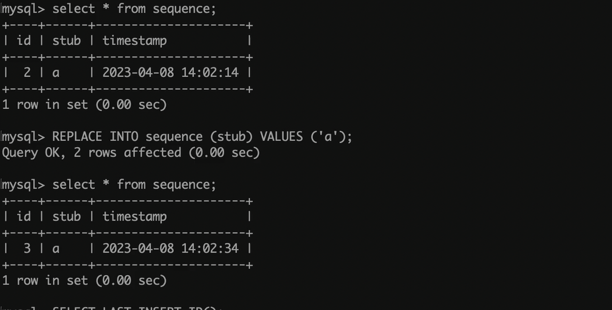
数据表
数据表设计
lur1和 sur1都唯一，长链和短链都不允许重复
长链接的数据量大不适合建索引，所以这里使用md5值来做索引
is_del是软删除标识
可以采用读写分离的模式，写主库、读从库
CREATE TABLE `short_url_map` ( `id` BIGINT UNSIGNED NOT NULL AUTO_INCREMENT COMMENT '主键', `create_at` DATETIME NOT NULL DEFAULT CURRENT_TIMESTAMP COMMENT '创建时间', `create_by` VARCHAR(64) NOT NULL DEFAULT '' COMMENT '创建者', `is_del` tinyint UNSIGNED NOT NULL DEFAULT '0' COMMENT '是否删除：0正常 1删除', `lurl` varchar(2048) DEFAULT NULL COMMENT '长链接', `md5` char(32) DEFAULT NULL COMMENT '长链接MD5', `surl` varchar(11) DEFAULT NULL COMMENT '短链接', PRIMARY KEY(`id`), INDEX(`is_del`), UNIQUE(`md5`), UNIQUE(`surl`) ) ENGINE=INNODB DEFAULT CHARSET=utf8mb4;数据量
URL 网址的最大长度不同浏览器下不同
1 条长链+短链需要的存储空间假设为 200bytes/条
假设每个业务线每秒写入 100 条，10 条线就是 1000 条/秒
一主两备份共三份数据，索引等冗余系统 1.5
这样 200*1000*3600*24*365*3*1.5大概等于 20T
数据删除
- 本项目不涉及链接配置过期时间，所有删除均为软删除，通过手动标记实现删除
预防攻击
对外服务
IP 请求限制
用户限制转链额度
记录已转链接的 URL 缓存，防止刷光 ID，适用于相同的 URL 可以转成不同短链接的场景
LRU 缓存 URL
布隆过滤器
校验链接是否有效
对内服务
权限认证
账户每日限额
检验链接是否有效
访问短链方式
使用 Redis 作为缓存+MySQL 进行持久化存储
短链接请求进来之后先根据标识符查询缓存中的，有就返回，没有就查询，MySQL 数据库，查到就返回重定位响应，也才写入缓存中
关于缓存设置
采用 LRU 方式
Redis 集群部署
根据数据量设计内存的大小，使用 LRU 淘汰策略，移除最近最少使用的 key
环保节缓存击穿的问题
过期时间加大
加锁
使用 singleflight 合并请求
解决缓存穿透的问题
通过布隆过滤器，不存储原始数据，如果过滤器找不到一定不在，找到了就查找数据库，可能不存在
布谷鸟过滤器，支持删除本项目比较适合使用布谷鸟过滤器
部署
我们的短链服务部署在 Nginx 后。通过这种方式，可以通过 Nginx 的访问日志（access.log）来统计访问数据。（例如通过EFK采集日志，统计报表）
项目管理
使用 git
技术栈总结
Golang Go-Zero MySQL Redis Git Nginx EFK
项目实现
1、搭建项目骨架
1.1、建库建表
使用 docker创建的 MySQL 容器，在其中进行建库建表，具体过程如下图：
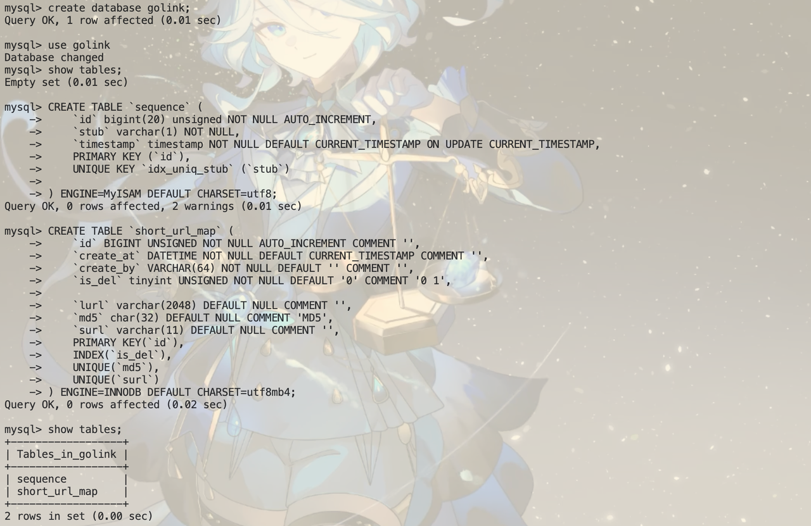
1.2、搭建 go-zero框架的骨架
我们使用 goctl进行框架代码的生成
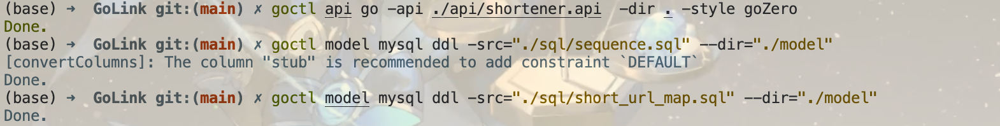
api 文件
syntax = "v1"
// 进行项目的简单说明
info (
title: "短链接项目"
author: "aorangehc"
date: "2025年 8 月 5 日"
version: "v1"
)
type ConvertReq {
LongUrl string `json:"longUrl"`
}
type ConvertResp {
ShortUrl string `json:"shortUrl"`
}
type ShowReq {
ShortUrl string `json:"shortUrl"`
}
type ShowResp {
LongUrl string `json:"longUrl"`
}
@server (
prefix: "/api/shortener"
)
service shortener_api {
@handler ConvertHandler
post /convert (ConvertReq) returns (ConvertResp)
@handler ShowHandler
get /:shortUrl (ShowReq) returns (ShowResp)
}model文件
CREATE TABLE `sequence` (
`id` bigint(20) unsigned NOT NULL AUTO_INCREMENT,
`stub` varchar(1) NOT NULL,
`timestamp` timestamp NOT NULL DEFAULT CURRENT_TIMESTAMP ON UPDATE CURRENT_TIMESTAMP,
PRIMARY KEY (`id`),
UNIQUE KEY `idx_uniq_stub` (`stub`)
) ENGINE=MyISAM DEFAULT CHARSET=utf8;
CREATE TABLE `short_url_map` (
`id` BIGINT UNSIGNED NOT NULL AUTO_INCREMENT COMMENT '主键',
`create_at` DATETIME NOT NULL DEFAULT CURRENT_TIMESTAMP COMMENT '创建时间',
`create_by` VARCHAR(64) NOT NULL DEFAULT '' COMMENT '创建者',
`is_del` tinyint UNSIGNED NOT NULL DEFAULT '0' COMMENT '是否删除：0正常 1删除',
`lurl` varchar(2048) DEFAULT NULL COMMENT '长链接',
`md5` char(32) DEFAULT NULL COMMENT '长链接MD5',
`surl` varchar(11) DEFAULT NULL COMMENT '短链接',
PRIMARY KEY(`id`),
INDEX(`is_del`),
UNIQUE(`md5`),
UNIQUE(`surl`)
) ENGINE=INNODB DEFAULT CHARSET=utf8mb4;1.3、下载项目依赖
# 在根目录下使用
go mod tidy1.4、运行项目
运行正常
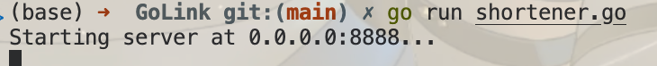
1.5、修改配置文件和配置结构体
咋yaml 文件中增加数据库配置并在 config 文件中进行相应参数的添加。
ShortUrlDB:
DataSource: "user:password@tcp(127.0.0.1:3307)/golink?charset=utf8mb4&parseTime=True&loc=Local"
SequenceDB:
DataSource: "user:password@tcp(127.0.0.1:3307)/golink?charset=utf8mb4&parseTime=True&loc=Local"
type Config struct {
rest.RestConf
ShortUrlDB struct {
DataSource string
}
SequenceDB struct {
DataSource string
}
}2、转链
长链接 -> 短链接
2.1、长链接校验
数据不能为空
使用 validator 库进行参数校验
go get github.com/go-playground/validator/v10之后在 api文件中参数后面添加 validate 参数和设置
type ConvertReq {
LongUrl string `json:"longUrl" validate:"required"`
}
type ConvertResp {
ShortUrl string `json:"shortUrl"`
}
type ShowReq {
ShortUrl string `json:"shortUrl" validate:"required"`
}
type ShowResp {
LongUrl string `json:"longUrl"`
}重新生成代码后修改 context 文件并测试，数据校验设置成功，对空数据会直接报错。
// 参数校验
if err := validator.New().StructCtx(r.Context(), &req); err != nil {
httpx.ErrorCtx(r.Context(), w, err)
return
}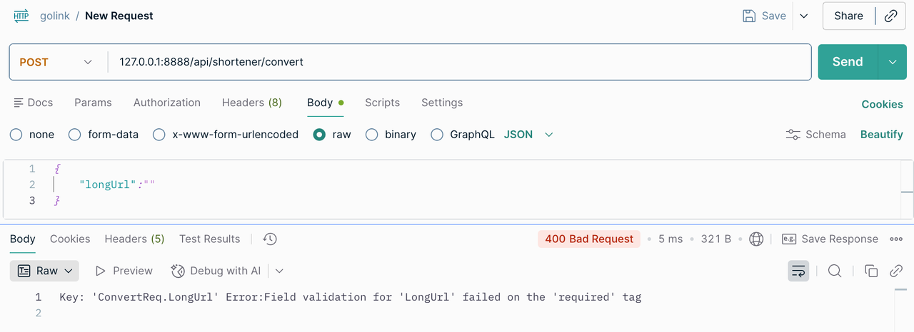
长链接能够进行请求
通过 http 标准库创建一个 http 客户端进行探活
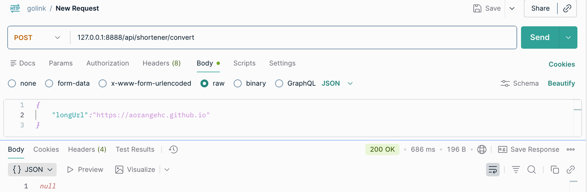
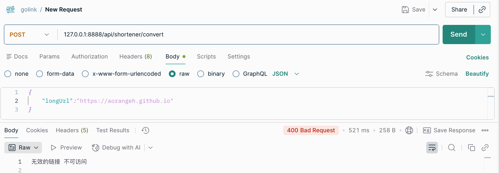
判断是否已经转链
数据库中使用 md5作为主键
先生成md5
之后查数据库中的 md5是否存在
md5Str := md5.Sum([]byte(req.LongUrl))
u, err := l.svcCtx.ShortUrlModel.FindOneByMd5(l.ctx, sql.NullString{String: md5Str, Valid: true})
if err != sqlx.ErrNotFound {
if err == nil {
return nil, errors.New("该长链接已转链，短链接为：" + u.Surl.String)
}
logx.Errorw("ShortUrlModel.FindOneByMd5 error", logx.Field("err", err), logx.Field("md5", md5Str))
return nil, err
}
// Sum 计算数据的 MD5 值，返回十六进制字符串表示
func Sum(data []byte) string {
h := md5.New()
h.Write(data)
return hex.EncodeToString(h.Sum(nil))
}
避免循环转链接
解析出链接的 basepath，然后查询数据库中是否是已经转过的短链
basePath, err := urltools.GetBasePath(req.LongUrl)
if err != nil {
logx.Errorw("GetBasePath error", logx.Field("err", err))
return nil, err
}
u, err = l.svcCtx.ShortUrlModel.FindOneBySurl(l.ctx, sql.NullString{String: basePath, Valid: true})
if err != sqlx.ErrNotFound {
if err == nil {
return nil, errors.New("该链接已转链，短链接为：" + u.Surl.String)
}
logx.Errorw("ShortUrlModel.FindOneBySurl error", logx.Field("err", err), logx.Field("basePath", basePath))
return nil, err
}
// GetBasePath 获取 url 的 base path
func GetBasePath(baseUrl string) (string, error) {
myUrl, err := url.Parse(baseUrl)
if err != nil {
return "", err
}
basePath := path.Base(myUrl.Path)
return basePath, nil
}2.2、取号器实现
每来一个转链请求，使用 replace into 语句往 sequence 表中插入一条数据，并取出 id 作为号码。
我们在 model中增加新的方法，时间 replace 方法并返回最新的 id
// Replace 实现 repalce into语句，返回最后插入数据的 id
func (m *defaultSequenceModel) Replace(ctx context.Context, newData *Sequence) (int64, error) {
query := fmt.Sprintf("replace into %s (%s) values (?, ?)", m.table, sequenceRowsExpectAutoSet)
ret, err := m.conn.ExecCtx(ctx, query, newData.Stub, newData.Timestamp)
if err != nil {
return 0, err
}
id, err := ret.LastInsertId()
if err != nil {
return 0, err
}
return id, nil
}测试结果正常。
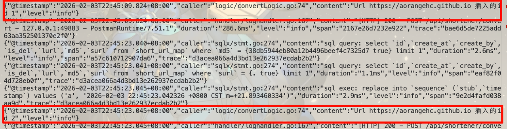
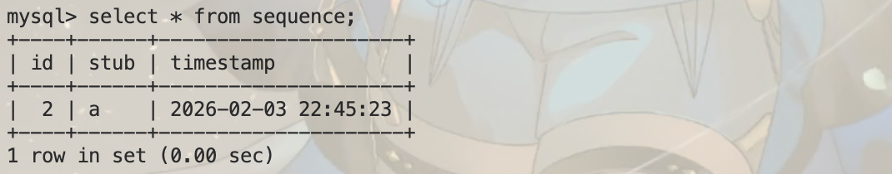
2.3、62 进制转链
package base62
import (
"math"
"strings"
)
// 62进制转换
// 0123456789abcdefghijklmnopqrstuvwxyzABCDEFGHIJKLMNOPQRSTUVWXYZ
// 0-9：0-9
// a-z：10-35
// A-Z：36-61
// 为了避免安全性，打乱顺序
var (
baseStr string
baseStrLen uint64
)
// BaseInit 初始化
func BaseInit(bs string) {
if len(bs) == 0 {
panic("baseStr is empty")
}
baseStr = bs
baseStrLen = uint64(len(bs))
}
// Base62Encode 将数字转换为62进制
func Base62Encode(num uint64) string {
if num == 0 {
return string(baseStr[0])
}
var res []byte
for num > 0 {
res = append(res, baseStr[num%baseStrLen])
num /= baseStrLen
}
return string(reverse(res))
}
// Base62Decode 将62进制转换为数字
func Base62Decode(str string) (seq uint64) {
bl := []byte(str)
bl = reverse(bl)
for idx, b := range bl {
base := math.Pow(float64(baseStrLen), float64(idx))
seq += uint64(strings.Index(baseStr, string(b))) * uint64(base)
}
return seq
}
func reverse(s []byte) []byte {
for i, j := 0, len(s)-1; i < j; i, j = i+1, j-1 {
s[i], s[j] = s[j], s[i]
}
return s
}通过打乱全局 62 进制字符串简单保证安全性
通过设置全局的短链接黑名单实现某些词汇的出现
2.4、存储和测试
结果存储到数据库中
// 4.存储长链接和短链接的映射关系
if _, err := l.svcCtx.ShortUrlModel.Insert(l.ctx, &model.ShortUrlMap{
Lurl: sql.NullString{String: req.LongUrl, Valid: true},
Surl: sql.NullString{String: short, Valid: true},
Md5: sql.NullString{String: md5Str, Valid: true},
}); err != nil {
logx.Errorw("ShortUrlModel.Insert error", logx.Field("err", err))
return nil, err
}
shortUrl := l.svcCtx.Config.ShortDoamin + "/" + short // shortUrl = 'http://localhost:8080/' short
resp = &types.ConvertResp{
ShortUrl: shortUrl,
}
return resp, nil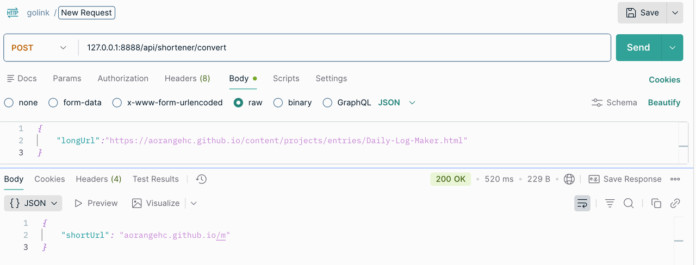

3、查看短链接
3.1、实现短链接重定向接口
接收到短链接请求之后，重定向到真实的链接，同时进行测试
func (l *ShowLogic) Show(req *types.ShowReq) (resp *types.ShowResp, err error) {
// 根据短链接查询长链接
u, err := l.svcCtx.ShortUrlModel.FindOneBySurl(l.ctx, sql.NullString{String: req.ShortUrl, Valid: true})
if err != nil {
if err == sql.ErrNoRows {
return nil, errors.New("404 Not Found")
}
logx.Errorw("ShortUrlModel.FindOneBySurl error", logx.Field("err", err))
return nil, err
}
resp = &types.ShowResp{
LongUrl: u.Lurl.String,
}
// 返回查询到的长链接，在 handler 层进行重定向返回
return resp, nil
}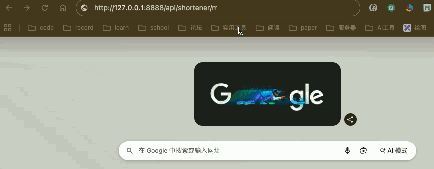
为了提升性能，加入 Redis 缓存，提升速度
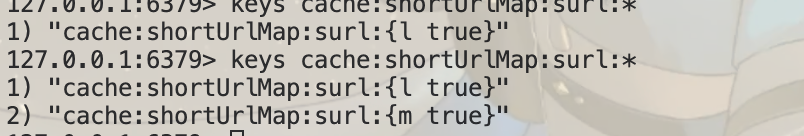
3.2、singleflight
它提供了重复函数调用抑制机制，使用它可以避免同时进行相同的函数调用。第一个调用未完成时后续的重复调用会等待，当第一个调用完成时则会与它们分享结果，这样一来虽然只执行了一次函数调用但是所有调用都拿到了最终的调用结果。
go-zero框架默认使用 singleflight
3.3、使用布隆过滤器
防止出现缓存穿透的情况（短时间内大量不存在数据进行请求）

通过布隆过滤器的机制，当所有对应位置全为 1 的时候表示可能存在，否则一定不存在。
参考资料
Ticket Servers: Distributed Unique Primary Keys on the Cheap
System Design : Scalable URL shortener service like TinyURL
How to Design a URL Shortener Service (System Design Interview Guide)